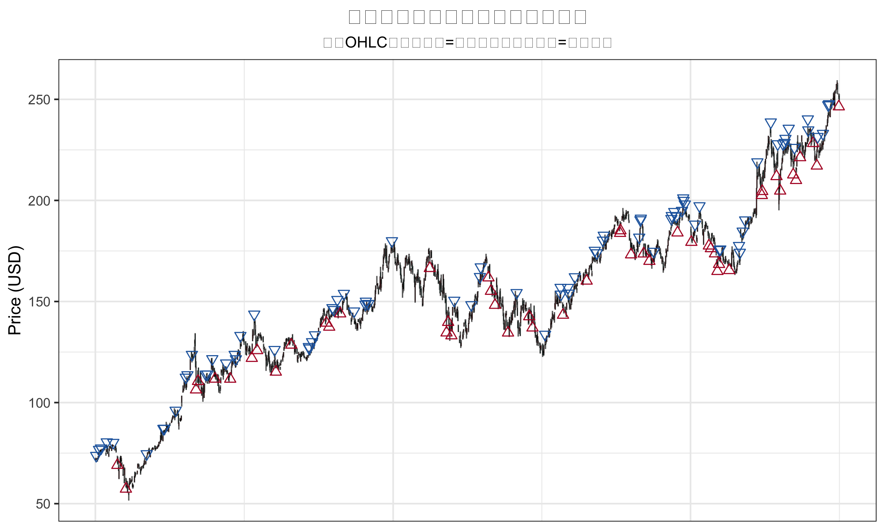
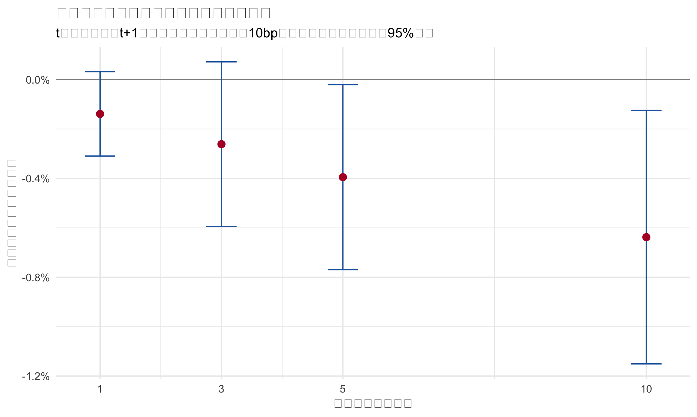

十字线、犹豫与失败信号
问题现场
十字线常被称为“多空平衡”，但开盘与收盘接近并不意味着买卖力量相等，也不自动意味着反转。它可能发生在流动性不足、价格最小变动单位过粗或波动极低的交易日。真正的问题是：十字线相对于此前趋势、当日振幅和关键位置提供了什么新增信息？
学习目标
- 定义普通、长腿、蜻蜓、墓碑和黄包车夫十字；
- 用相对阈值代替开收盘完全相等；
- 给中性形态赋予可审计的条件方向；
- 检验十字线是否只是波动率代理；
- 研究“信号失败”能否提供反向信息。
经典形态与市场机制
普通十字线实体极小；长腿十字上下影都长，黄包车夫的实体接近日内中点；蜻蜓十字主要有长下影，墓碑十字主要有长上影。连续三根十字组成三星形态，极为稀有。经典解释强调犹豫，尤其在长趋势或长实体之后更受重视。
“犹豫”不是方向。为形成候选信号，本书采用条件规则：过去5日下跌后的十字记为+1，上涨后的十字记为-1，近乎横盘则为0。这是明确的研究假设，不是十字线的固有方向。
可计算定义
普通十字线要求 \(b_t=B_t/R_t\le\tau_b\)，并限制某些影线比例。长腿十字进一步要求 \(U_t\)、\(D_t\) 均较大；墓碑要求上影显著、下影很短；蜻蜓相反。方向函数为：
\[ s_t=-\operatorname{sign}(C_t/C_{t-5}-1)\cdot I(\text{Doji}_t). \]
该公式不会使用未来收益。若前5日收益为0或不可得，取0。
研究设计
主实验使用R端 add_csp_doji() 的 Doji 列和5日反向方向。稳健性一：把实体阈值收紧和放宽；稳健性二：按20日实现波动率高低分层；稳健性三：定义失败——信号后第1日沿预测方向移动但第5日净收益反向——研究失败后是否出现延续。
R实现
ohlc <- lab_xts()
doji_r <- eCandleSticks::add_csp_doji(
ohlc, maxbodyCL = 0.1, maxshadowCL = 0.1
)
features <- lab_features()
signal_r <- ifelse(
doji_r[, "Doji"], -sign(features$ret_5), 0
)
signal_r[!is.finite(signal_r)] <- 0输出还包括 DragonflyDoji 与 GravestoneDoji。普通十字列可能与两个子类型重叠，组合时应去重。
Python实现
import numpy as np
from ecandlesticks import add_doji
from python.candlestick_lab import load_data, to_ohlcv
ohlcv = to_ohlcv(load_data())
doji = add_doji(ohlcv)
prior_return = ohlcv["Close"].pct_change(5)
signal_py = np.where(doji["Doji"], -np.sign(prior_return), 0)Python TA-Lib与R比例阈值识别的十字数量不同。两种实现都可被研究，但不能混合两边信号后只选择表现较好者。
图形诊断

图上检查十字是否发生在长实体之后、波动是否极低、上下影结构是否匹配子类型。若大量十字集中在早期低价格阶段，可能是最小报价单位造成的尺度效应。
证据与稳健性
| sample | events | mean_gross | mean_net | win_rate | ci_low | ci_high |
|---|---|---|---|---|---|---|
| 全部事件 | 399 | -0.0030 | -0.0040 | 0.4361 | -0.0077 | -2e-04 |
| 非重叠事件 | 264 | -0.0033 | -0.0043 | 0.4091 | -0.0090 | 4e-04 |

当前样本中，十字反向规则在默认成本下没有表现出稳定优势。由于信号较多，均值区间相对窄，这类“较精确的负结果”同样有价值。进一步应把事件按实体比例分位数、此前趋势强度和波动率分层，检查失败是否集中在强趋势中。
AI协作实验室
AI负责生成阈值网格和重叠检查，列出普通十字与子类型的包含关系。约束是参数网格在运行收益前保存，结果必须包含所有参数而非只保留最佳值。验收使用信号数量单调性检查：阈值放宽时普通十字数量不应减少。
失效条件与常见误区
- 把开收完全相等作为跨市场定义；
- 把中性十字直接编码为看涨；
- 同时统计普通十字、墓碑和蜻蜓而未去重；
- 忽略最小报价单位和低波动造成的伪十字；
- 只研究成功十字，不记录失败信号。
本章小结与练习
十字线表达开收接近，不表达确定方向。方向必须来自事先定义的上下文，失败也应成为研究对象。
- 比较R与Python十字事件数，并抽取差异日期核对实体比例。
- 按20日波动率高低分组检验十字反向规则。
- 定义“十字失败后的趋势延续”并说明成交时点。
进入下一章前，请确认你能给中性形态赋予条件方向而不使用未来数据，并能检查子类型重叠。